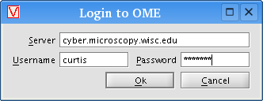

If you have access to an OME (Open Microscopy Environment) database, you can upload data into it from within VisBio. Select the data to be uploaded from the Data panel, click the "Export" button, then choose "Upload to OME" from the menu.
A dialog box will appear asking you to login to OME. Specify the address of the OME server, as well as the username and password of the login to use for upload. E.g.:

Click the "Ok" button, and the Tasks panel
will report the status of the upload process as it progresses. If there are any
problems during upload, they will be reported in VisBio's "Error console"
window.